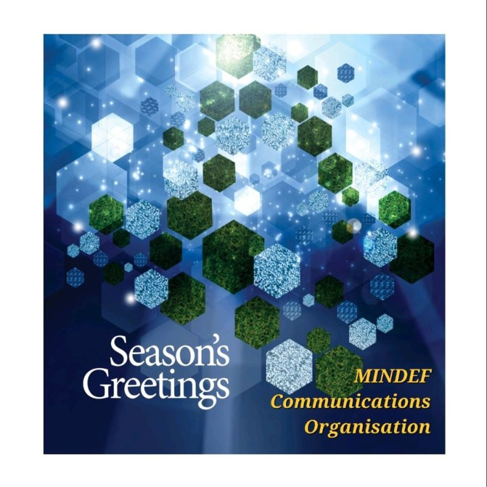

Work & Writing
Public trust, narratives and the information environment.
Selected research and public posts. This page can grow into a proper article library over time.

Published research · 2025
Ongoing notesSeizing the narrative in a global information war
An examination of President Volodymyr Zelenskyy's media communication strategy in the first 100 days of Russia's invasion of Ukraine.
Read at Emerald →LinkedIn posts
Short observations on AI, communications, public trust, defence engagement and the changing media landscape.
View LinkedIn profile →Medium: the connected records confirm a Medium account subscription, but not a reliable personal profile URL or authored stories. A link has not been invented for this draft.